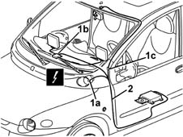

5580M80 on-board navigator system wiring harness - r r
- Path
- Procedures > 55 ELECTRICAL EQUIPMENT > 5580 SPECIAL ACCESSORIES > 5580M om-board navigator > 5580M80 on-board navigator system wiring harness - r r
- Kind
- repair procedure (removal / refitting; the operation number is the code)
- Applies to
- all engines; all production periods
- Interactive page
- https://sloeber94.github.io/elrnDB-fMltpl/en/#/2892001
Applies to: all engines; all production periods
 Removing
Removing
 Refitting
Refitting- 7040A24 lower facia cover trim - r+r
7040A09 passenger air bag compartment cover - r r
2125C24 gear lever knob - r + r
7065C10 air conditioning control panel - r+r
7040A11 control panel lid - r + r
5560B10 analogue control panel - r+r
7040A77 glass holder on facia trim - r r
7010M16 rear electric window enablement switch - r+r
7040A96 facia glove compartment flap (1) lh or rh - r r (right and left)
5580C26 LOCK BARREL KEY/SWITCH for deactivating passenger 'AIR BAG - R.R.
7040A44 facia lh side cover - r r
7040A45 facia rh side cover - r r
7040A25 central facia trim - r r
5540C18 headlamp/light cluster alignment correction motor switch - r+r
7025A24 boot lid opening lever - r+r
7040L42 sill plate connection of one front door (1), lh or rh - r r (right and left)
7045A10 l/h or r/h front seat (one) - r+r (left side)
5580M30 navigation system control unit cd unit - r r
7040L40 REAR COMPARTMENT SCUFF STRIP - R R (left side)
7040H30 front pillar trim - r r (left side)
Move aside the carpeting and the parts necessary for removal of the navigator system cable loom.
1. Disconnect electrical connections (1a), (1b), (1c).
 | Name | Connector |
|---|---|---|
1a | Navigation system junction |
| Name | Connector |
|---|---|---|
1b | GPS aerial |
| Name | Connector |
|---|---|---|
1c | Navigation system display |
2. Disconnect the retainers and remove the navigator system cable loom.

Applies to: all engines; all production periods
Refitting
RemovingCheck that the navigator system cable loom is not damaged and that the individual conductors are firmly attached to the connections.
Check that the connections are fitted with the anti-slip devices (secondary lock).
If necessary, check the continuity.
Reposition the navigator system cable loom.
Connect the electrical connections and the retainers for the navigator system cable loom.
Refit and secure the carperting and the parts moved or removed to remove the navigator system cable loom.
7040H30 front pillar trim - r r (right and left)
7040L40 REAR COMPARTMENT SCUFF STRIP - R R (right and left)
5580M30 navigation system control unit cd unit - r r
7045A10 l/h or r/h front seat (one) - r+r (left side)
7040L42 sill plate connection of one front door (1), lh or rh - r r (right and left)
7025A24 boot lid opening lever - r+r
5540C18 headlamp/light cluster alignment correction motor switch - r+r
7040A25 central facia trim - r r
7040A45 facia rh side cover - r r
7040A44 facia lh side cover - r r
5580C26 LOCK BARREL KEY/SWITCH for deactivating passenger 'AIR BAG - R.R.
7040A96 facia glove compartment flap (1) lh or rh - r r (right and left)
7010M16 rear electric window enablement switch - r+r
7040A77 glass holder on facia trim - r r
5560B10 analogue control panel - r+r
7040A11 control panel lid - r + r
7065C10 air conditioning control panel - r+r
2125C24 gear lever knob - r + r
7040A09 passenger air bag compartment cover - r r
- 7040A24 lower facia cover trim - r+r
Carry out the satellite navigator 'Menù Test' ( 5580M om-board navigator ).
Check that the components involved are correctly fitted and working properly.
Topics linked from this page (27)
- 5580M om-board navigator
- 2125C24 gear lever knob - r + r
- 5540C18 headlamp/light cluster alignment correction motor switch - r+r
- 5560B10 analogue control panel - r+r
- 5570T80 car radio unit - r+r
- 5580C26 LOCK BARREL KEY/SWITCH for deactivating passenger 'AIR BAG - R.R.
- 5580M30 navigation system control unit cd unit - r r
- 7010M16 rear electric window enablement switch - r+r
- 7025A24 boot lid opening lever - r+r
- 7040A04 facia lower trim-r r
- 7040A09 passenger air bag compartment cover - r r
- 7040A11 control panel lid - r + r
- 7040A25 central facia trim - r r
- 7040A37 fuse box cover - r r
- 7040A44 facia lh side cover - r r
- 7040A45 facia rh side cover - r r
- 7040A77 glass holder on facia trim - r r
- 7040A96 facia glove compartment flap (1) lh or rh - r r
- 7040H30 front pillar trim - r r
- 7040L40 REAR COMPARTMENT SCUFF STRIP - R R
- 7040L42 sill plate connection of one front door (1), lh or rh - r r
- 7045A10 l/h or r/h front seat (one) - r+r
- 7065C10 air conditioning control panel - r+r
- 7065C42 ashtray (one) r+r
- D78 Navigation system junction
- E65 Navigation system display
- P29 GPS aerial